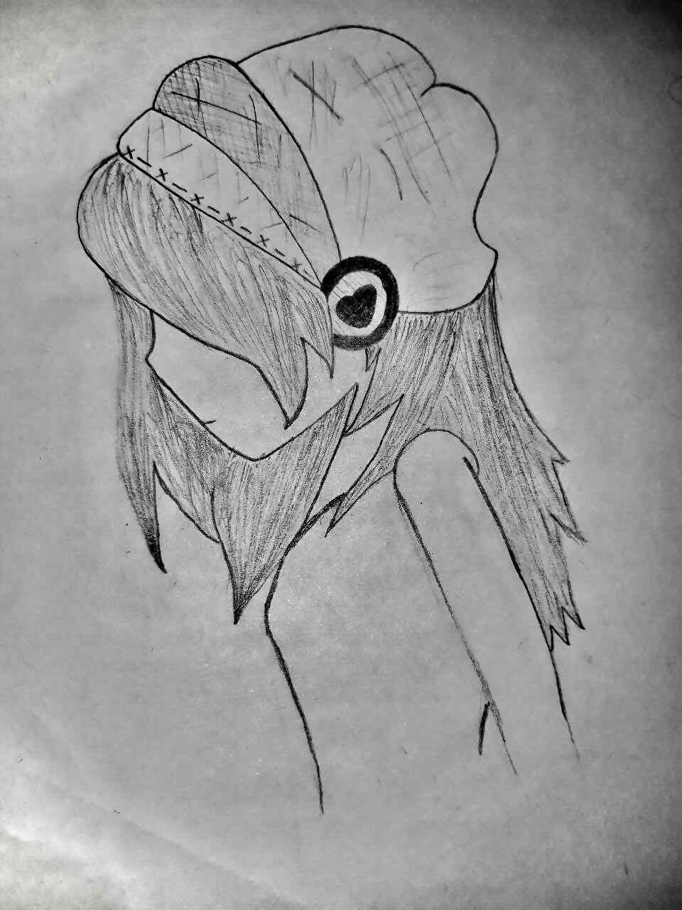
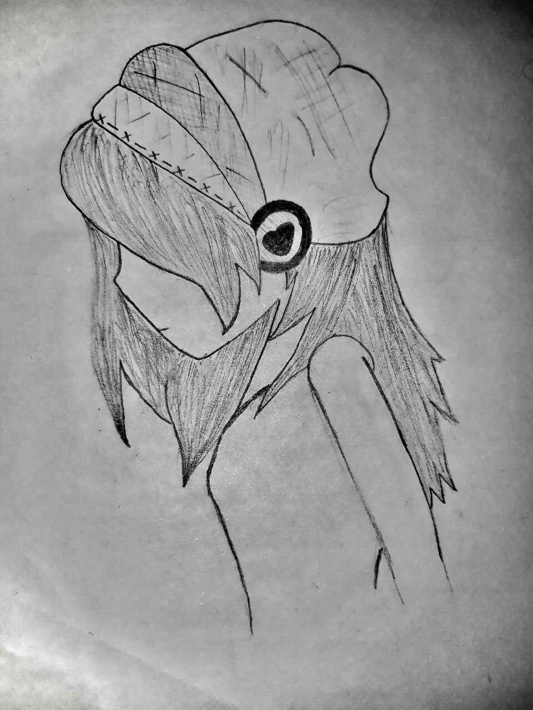
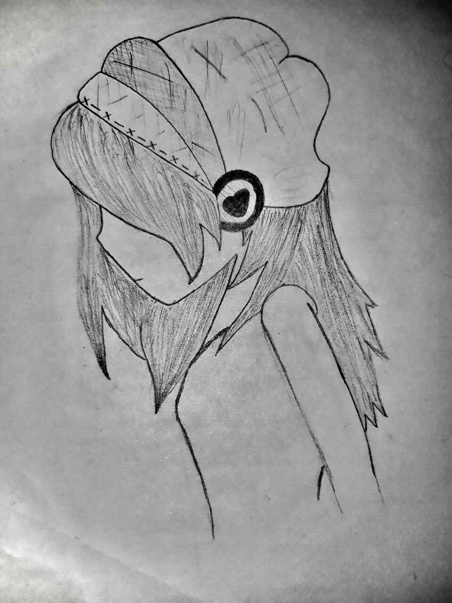

This is one of my favorite hobbies because it allows me to be both creative and
hands-on. I enjoy experimenting with new recipes, from cakes and cookies to intricate pastries, and
turning simple ingredients into delicious treats. There’s something incredibly satisfying about the
process, from mixing and measuring to decorating the final product. Baking not only brings me joy but
also lets me share sweet moments with family and friends.

Skill Set
Programming
As a software engineering student I can develop websites and have the following
programing skills:
 
